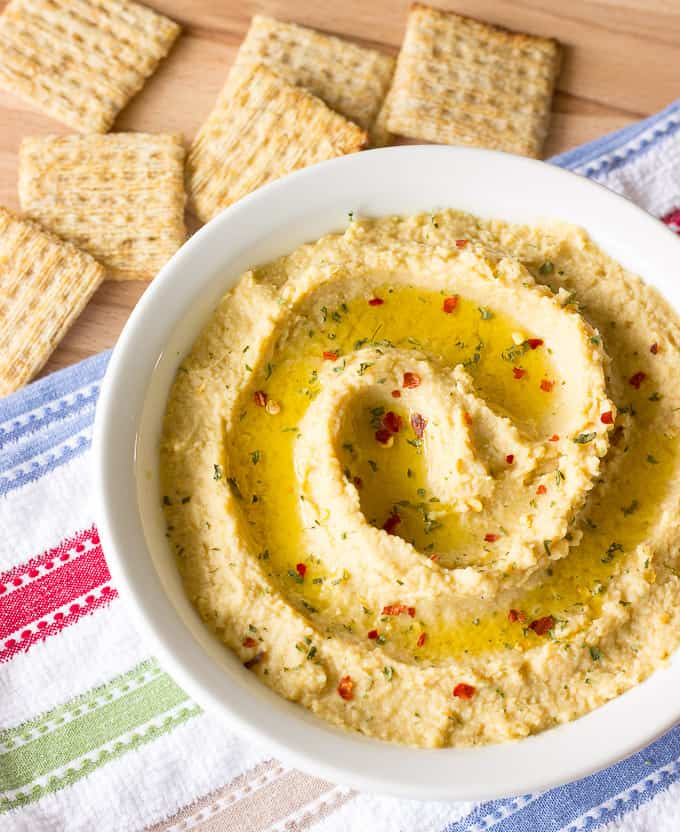

How to make: Hummus
Link to recipe

Sesame Seed Oil Hummus Recipe
Hummus is a Middle Eastern dip, spread, or savory dish made from cooked, mashed chickpeas blended with tahini, lemon juice, and garlic.
The standard garnish in the Middle East includes olive oil, a few whole chickpeas, parsley, and paprika.
In Middle Eastern cuisine, it is usually eaten as a dip, with pita bread.
Note: This recipe does not include tahini
Most everyone knows hummus. It’s the quintessential Middle Eastern dip made by blending chickpeas with tahini, garlic, and citrus.
This homemade hummus recipe is so much easier to make than most people think and way better than the store bought stuff!
Ingredients:
- 1 can (15 oz) of chickpeas - drained, rinsed, and mashed
- 2 tablespoons of water, or more as needed
- 2 tablespoons lemon juice
- 2 tablespoons sesame seed oil
- 1 tablespoon olive oil
- 2 cloves crushed garlic
- 1/2 teaspoon salt
- 1/2 teaspoon ground cumin
- 1/4 teaspoon ground black pepper
Directions
- Blend chickpeas, water, lemon juice, sesame seed oil, olive oil, garlic, salt, cumin, and black pepper together in a blender until smooth
- Add more water if hummus is too thick
- Sprinkle parsley, red pepper flakes, or olive oil on top if desired.
- Enjoy!